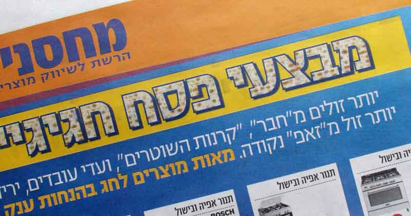
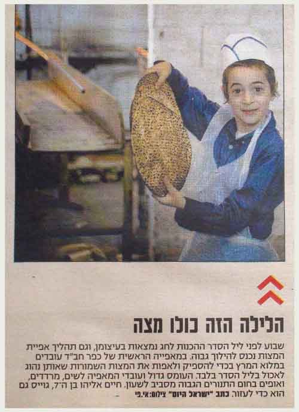
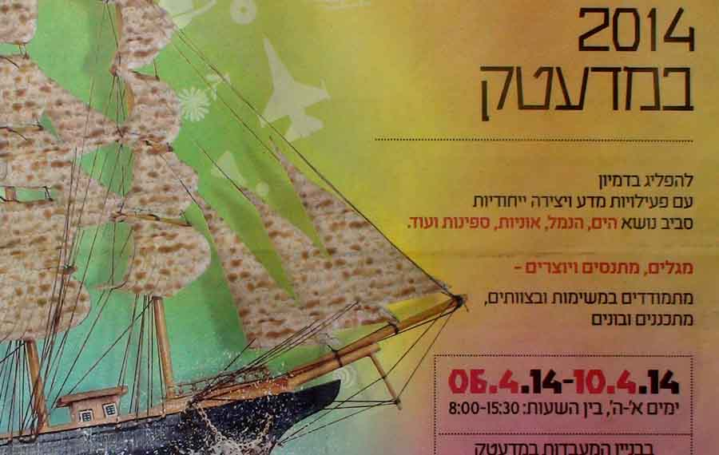
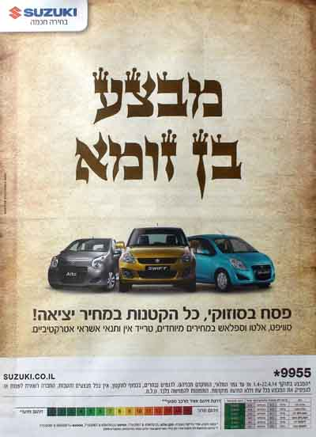
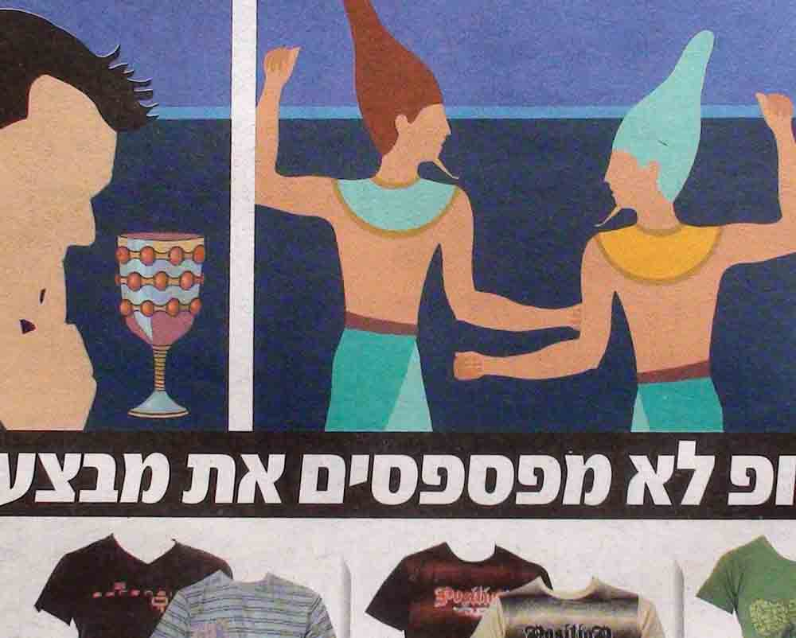
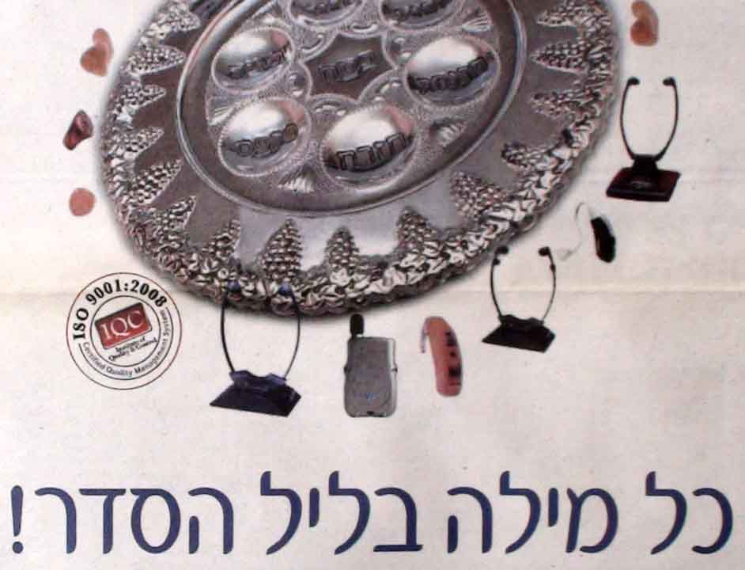

ПЕСАХ (Пасха) в израильской РЕКЛАМЕ
В этой статье "Песах в израильской рекламе" я хочу предложить рекламные вырезки из предпраздничных израильских газет. Все они связаны одной темой – праздник ПЕСАХ (Пасха) в израильской рекламе.

Уже не первый год, при просматривании израильских газет, я обращаю особенное внимание на рекламные объявления. Особенно в предпраздничных распродажах израильская реклама часто черпает вдохновение в еврейской традиции, обращаясь к образам и текстам Торы и Писания.
В отличие от других стран, подавляющее большинство государственных праздников Израиля - это библейские праздники.
Право, не знаю, есть ли еще страна, в которой обрзазы Св.Писаний по праздникам не сходят с газет? Не стоит однако думать, что все израильтяне так набожны.
Сказать, что реклама в Израиле, используя библейские образы и традиции, ныряет слишком глубоко, было бы не серьезно. Многие воспринимают это как фольклор и только, не очень задумываясь о чудесах и вере...
Разумеется, израильская реклама, как и любая другая, использует праздничный период для проведения коммерческих акций. И это понятно. Ведь именно это время характеризуется наибольшей покупательской активностью населения.
И ожидать от рекламы исполнения функций проповедника было бы странно. Вместе с тем, это не раз доказано в исследованиях, реклама безусловно оказывает сильное влияние на умы молодежи и населения вообще. И поэтому даже то немногое, что есть в израильской рекламе от Торы и Пророков, согревает мое сердце, рождает мысли и даже воодушевляет.
Прикольно, что сегодняшняя рекдама строится на образах более чем трех тысячелетней давности. И сами рекламщики, в большинстве случаев вполне себе светские люди, черпают вдохновение в Библейских сказаниях.
В рекламе нередко обыгрывается сверхъественное и, тем не менее, возможное...
В качестве рекламных слоганов часто используются цитаты из Торы, Пасхальной Агады или старинных песен, распеваемых за столом Седера в Пасхальную ночь.
![LG-скидка для вас - Исход этого года! Самый значительный "Исход" этого года для вас, если вы воспользуетесь скидками компании LG! Понятно, что более впечатляющей и даже потрясающей картины Исхода, чем переход через Ям-Суф (Чермное море) евреев три с половиной тысячи лет назад трудно себе представить. Это несомненно должно потрясти воображение покупателя. Величайшее из событий истории человечества, когда сыны Израилевы прошли посуху по дну, а воды моря стояли стеной по обе стороны! Вот такого "Исхода", который предлагает своими скидками торговая фирма вы еще не видели, говорит рекламный слоган.](../img/2014/04/pasha-reklama-2_900.jpg)

Скидка на праздничную корзину покупок! Такого Исхода вы еще не видели... Т.е., воспользуйтесь 10%-й скидкой и тогда пройдете через все ваши праздничные траты как посуху, подобно отцам нашим, некогда перешедшим море сухими и невредимыми. Посыл понятен: имейте дело с нами и все сверхъестественным образом устроится!




Разумеется, главное "действующее лицо" Пасхального Седера - МАЦА. Эта самая маца главенствует и в рекламе. Сюжет о маце смотрите здесь.

Мацовые паруса - редкий образ, рождающий много ассоциаций и мыслей.

Это надо понимать в контексте ситуации, описанной в Торе, когда сыны Израилевы обобрали египтян выпросив у них, по слову Всевышнего, много дорогих вещей серебряных и золотых, и разные красивые одежды (см. Исх.3:20-22 и Исх.12:35-36), т.е. даром получили колоссальные богатства. Позже эти богатства были употребляемы при строительстве мишкана (скинии) в пустыне Синайской.
Итак, реклама как бы намекает на то, что сейчас вы можете получить эти драгоценные подарки от Судзуки почти по цене тех египетских богатств, то есть, почти даром!

Надпись на рекламе: "Настолько красивые, что хочется плакать... от скидок и особенных предложений".
Праздничное настроение и создание атмосферы Седера создает фриз из серии картинок, подобных комиксам Пасхальной Агады. И в ней, как и во многих таких агадот, как бы не делается разницы между событиями древними и сегодняшними. Что создает впечатление сопричастности, преемственности.

Чаще всего реклама обращается к различного рода клише, понятным абсолютно всем в Израиле символам, понятиям и выражениям.

Кому, например, неизвестна эта фраза "ма ништана...?" и подобные тому: "Когда спросит сын твой...: - Что это? Почему мы поступаем так этой ночью?" (См. Быт.32:17 и др.), или "эхад, ми йодеа?" (детская считалка, распеваемая всем семейством за трапезой Седера).
автор: Эфраим Калиш /TORAART/